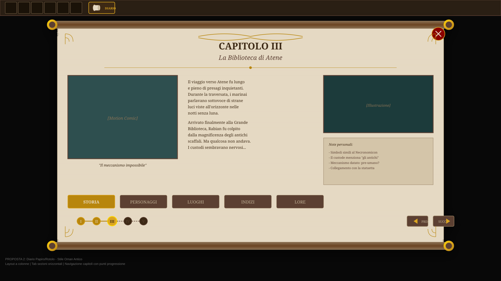

Style Proposals
Three visual directions explored for the in-game diary: Ancient Book, Papyrus Scroll, and Arcane Codex.

Ancient Book
RDR2/Uncharted-inspired. Two open pages: left for motion comic, right for narrative text. Chapter tabs with completion icons.
Proposal A
Papyrus Scroll
Ancient Oman-inspired. Three-column layout with decorated wooden rods. Horizontal section tabs with progression dots.
Proposal B
Arcane Codex
Lovecraftian cosmic style. Sidebar with chapter list, eldritch symbols. Purple/blue palette with star decorations.
Proposal C
Button Variants
Four button styles (Classic Book, Scroll, Arcane, Minimal) each shown in 4 states: Normal, Hover, Notification, Pressed.
UI Components
Navigation Structure
Reference for section navigation: chapter navigation, content tabs, story layout, user flow, auto-update system.
Information Architecture